Bottom-up construction of a neural assembly
Introduction
This tutorial goes through the process of building a neural assembly that is part of a larger model that performs category learning of images [1]. We will follow a bottom-up approach with these steps:
- build a model of a single neuron
- expand that model by connecting a few neurons into a local circuit
- define a "winner-takes-all" (WTA) circuit with lateral inhibition
- build a cortical block by connecting multiple WTAs together with feed-forward inhibition
- connect the cortical block to a model of an ascending system
- add a source of visual input (images) and a cortical block representing visual cortex to our model and simulate visual processing
In this tutorial you will learn to:
- Simulate single Hodgkin-Huxley neurons and visualize voltage traces.
- Build circuits step-by-step using
GraphSystemandadd_connection!. - Use
stackplotto visualize the spiking activity of multiple neurons at once. - Use composite blox (
WinnerTakeAll,Cortical) to abstract circuit motifs into reusable blocks. - Use
get_neuronsto extract individual neurons from a composite blox for plotting. - Drive cortical activity with a
NextGenerationEIascending neuromodulatory blox. - Connect an
ImageStimulusto simulate sensory-driven cortical responses.
Single spiking neuron from Hodgkin-Huxley model

Hodgkin-Huxley (HH) formalism to describe membrane potential of a single neuron
\[ \begin{align} C_m\frac{dV}{dt} &= -g_L(V-V_L) - {g}_{Na}m^3h(V-V_{Na}) -{g}_Kn^4(V-V_K) + I_{in} - I_{syn} \\ \frac{dm}{dt} &= \alpha_{m}(V)(1-m) + \beta_{m}(V)m \\ \frac{dh}{dt} &= \alpha_{h}(V)(1-h) + \beta_{h}(V)h \\ \frac{dn}{dt} &= \alpha_{n}(V)(1-n) + \beta_{n}(V)n \end{align}\]
using Neuroblox
using OrdinaryDiffEqVerner ## to build the ODE problem and solve it, gain access to multiple solvers from this
using Random ## for generating random variables
using CairoMakie ## for customized plotting recipies for blox
using CSV ## to read data from CSV files
using Downloads ## to download image stimuli files
using StructArrays
Random.seed!(42) ## Fix the random seed so that rand() calls (e.g. random background currents I_bg)
# produce the same results each run, matching the plots shown in the documentation.Random.TaskLocalRNG()define a single excitatory neuron 'blox' with steady input current I_bg = 0.5 microA/cm2
nn1 = HHNeuronExci(name=Symbol("nrn1"), I_bg=0.5)HHNeuronExci(:nrn1, nothing, @NamedTuple{E_syn, G_Na, G_K, G_L, E_Na, E_K, E_L, G_syn, V_shift, V_range, T_max, α, β, τ, I_bg, kₛₜₚ, spikes, spk_const}((0.0, 52.0, 20.0, 0.1, 55.0, -90.0, -60.0, 3.0, 10.0, 10.0, 0.025, 4.0, 0.2, 5.0, 0.5, 0.5, 0.0, 1.127)), Dict{Symbol, Any}())define graph and add the single neuron 'blox' as a single node into the graph
g = GraphSystem() ## defines a graph
add_node!(g, nn1) ## adds the defined blocks into the graphOrderedCollections.OrderedDict{Any, Vector{GraphDynamics.GraphSystemConnection}}()To solve the system, we first create an Ordinary Differential Equation Problem and then solve it over the tspan of (0,1e) using a Vern7() solver. The solution is saved every 0.1ms. The unit of time in Neuroblox is 1ms.
prob = ODEProblem(g, [], (0.0, 1000), [])
sol = solve(prob, Vern7(), saveat=0.1);acessing the voltage timeseries from the neuron block and plotting the voltage
v = voltage_timeseries(nn1, sol)
fig = Figure();
ax = Axis(fig[1,1]; xlabel = "time (ms)", ylabel = "Voltage (mv)")
cl = get_neuron_color(nn1) #specify color based on neuron type (excitatory/inhibitory)
lines!(ax, sol.t, v, color=cl)
fig ## to display the figure
Suggestion : Try different values of input current 'I_bg' and run the entire code block to see the output activity
Connecting three neurons through synapses to make a local feed-forward circuit

# When building a system from individually defined blox (rather than using the @graph macro),
# each blox must share the same namespace so that Neuroblox can correctly wire up their equations.
# We define a single shared namespace here and pass it to every blox we create. Note that when
# you use the @graph macro (as in the Getting Started tutorial), namespacing is handled for you
# automatically — you only need to set it manually here because we are building the graph
# step-by-step with add_connection!().
global_namespace=:g
# define three neurons, two excitatory and one inhibitory
nn1 = HHNeuronExci(name=Symbol("nrn1"), I_bg=0.4, namespace=global_namespace)
nn2 = HHNeuronInhib(name=Symbol("nrn2"), I_bg=0.1, namespace=global_namespace)
nn3 = HHNeuronExci(name=Symbol("nrn3"), I_bg=1.4, namespace=global_namespace)
# defien graph and connect the nodes with the edges (synapses in this case), with the synaptic 'weights' specified as arguments
g = GraphSystem(name=global_namespace)
add_connection!(g, nn1, nn2, DefaultRule(weight = 1.)) ##connection from neuron 1 to neuron 2 (nn1 to nn2)
add_connection!(g, nn2, nn3, DefaultRule(weight = 0.2)) ##connection from neuron 2 to neuron 3 (nn2 to nn3)
add_connection!(g, nn1, nn3, DefaultRule(weight = 0.5)) ##connection from neuron 1 to neuron 3 (nn2 to nn3)
# create an ODESystem from the graph and then solve it using an ODE solver
prob = ODEProblem(g, [], (0.0, 1000), [])
sol = solve(prob, Vern7(), saveat=0.1);
# plotting membrane voltage activity of all neurons in a stacked formretcode: Success
Interpolation: 1st order linear
t: 10001-element Vector{Float64}:
0.0
0.1
0.2
0.3
0.4
0.5
0.6
0.7
0.8
0.9
⋮
999.2
999.3
999.4
999.5
999.6
999.7
999.8
999.9
1000.0
u: 10001-element Vector{Vector{Float64}}:
[-65.0, 0.32, 0.05, 0.59, 0.0, 0.0, -65.0, 0.32, 0.05, 0.59, 0.0, 0.0, -65.0, 0.32, 0.05, 0.59, 0.0, 0.0, 0.0, 0.0]
[-65.35790618284332, 0.2997500737048637, 0.015838602224561803, 0.6276502930513789, 2.689244708679356e-5, 2.689244708679356e-5, -65.25930886811683, 0.29978250381170507, 0.01598612281089065, 0.627548627432455, 2.705906952650718e-5, 2.705906952650718e-5, -65.3907648608481, 0.3024939475248548, 0.023057551138396783, 0.6147210453571571, 5.0309950677030986e-17, 8.409860338010979e-16, 1.5650645852617072e-14, 2.590302208502418e-13]
[-65.61039859549865, 0.28102520486557264, 0.014373924433508625, 0.6621593642001095, 5.277488383129994e-5, 5.277488383129994e-5, -65.41561650698291, 0.28114829191883656, 0.014689337921645411, 0.6617889229295226, 5.3422438005479405e-5, 5.3422438005479405e-5, -65.68853245681225, 0.28619888105054697, 0.020948820403411634, 0.6381703276775323, 1.455606646112181e-16, 1.0474955795642139e-15, 4.535756874652824e-14, 3.185960024576224e-13]
[-65.77983781996438, 0.26376218858276845, 0.01400090500819409, 0.6935828137732208, 7.798671926101978e-5, 7.798671926101978e-5, -65.49076233175487, 0.2640256698076475, 0.014483789885342623, 0.6928242855507526, 7.941176943252486e-5, 7.941176943252486e-5, -65.90871645123511, 0.2710814799710894, 0.020257232924327313, 0.6602620972340941, 2.477845882303806e-16, 1.0605478059436045e-15, 7.729525857419619e-14, 3.171304598619588e-13]
[-65.88730074678517, 0.24788473956250986, 0.013779557521325403, 0.7220565586184702, 0.0001027685337417617, 0.0001027685337417617, -65.50544090322431, 0.24833147630833918, 0.014426881980204588, 0.7208296038056337, 0.00010525966697641678, 0.00010525966697641678, -66.06896950434306, 0.2570950947608922, 0.019801364673332034, 0.6809632293383608, 3.463386166479121e-16, 1.0272465413257428e-15, 1.0810664867384823e-13, 3.010280563805474e-13]
[-65.94829321601833, 0.23330959212200472, 0.013651062762546882, 0.7477636018731811, 0.00012729297073948404, 0.00012729297073948404, -65.47488097444854, 0.2339768392861397, 0.01446200420045528, 0.7460186278168153, 0.00013113687577661793, 0.00013113687577661793, -66.18279394166393, 0.2441842166064536, 0.019482879847486236, 0.7002798577710195, 4.394228232974063e-16, 9.931326145303561e-16, 1.3719488827908566e-13, 2.846775819628603e-13]
[-65.9742674576928, 0.21995102091113142, 0.013589799950751826, 0.7709098217440769, 0.0001516863574498137, 0.0001516863574498137, -65.41033661269893, 0.2208714337974959, 0.014565851092468928, 0.7686207950077414, 0.00015717169936588145, 0.00015717169936588145, -66.26046917596895, 0.23228854948225797, 0.019265258059414442, 0.718244913178715, 5.277924222154617e-16, 9.699002493870975e-16, 1.647684534560873e-13, 2.7175866017642753e-13]
[-65.97373469528533, 0.20772378515674148, 0.01357928949368183, 0.7917080825180765, 0.00017604267492878585, 0.00017604267492878585, -65.32017946812984, 0.20892622298036728, 0.014722750708100607, 0.7888664983483105, 0.0001834626029490796, 0.0001834626029490796, -66.30985940685797, 0.22134583881889305, 0.01912464751888475, 0.7349088983869105, 6.127180979054928e-16, 9.587130958344287e-16, 1.912028226551243e-13, 2.6260886357450694e-13]
[-65.95305784383633, 0.19654500480165785, 0.013606599358384305, 0.8103681864679382, 0.0002004328450814066, 0.0002004328450814066, -65.21067578833132, 0.19805517565116004, 0.014921137520920306, 0.8069781502821829, 0.00021008663077951104, 0.00021008663077951104, -66.33701275655898, 0.21129380097959746, 0.019042992756749564, 0.7503332013417336, 6.95389588525818e-16, 9.579689100855812e-16, 2.1685197095495163e-13, 2.5668725091847483e-13]
[-65.91702078052067, 0.1863353147310958, 0.013662125276650831, 0.8270908173609782, 0.00022491106601986967, 0.00022491106601986967, -65.08654359308235, 0.18817629616745984, 0.015152522035807383, 0.8231651184634201, 0.00023710517774042265, 0.00023710517774042265, -66.34660517044708, 0.20207141906351447, 0.019007117724434423, 0.7645853103061481, 7.76787481351776e-16, 9.657183268207154e-16, 2.4200677832846276e-13, 2.533447822053735e-13]
⋮
[-55.435731877920134, 0.16357954265271762, 0.050246536393566334, 0.890271539278393, 12.061187275544059, 12.061187275544059, -54.615032892157636, 0.17224372801174082, 0.05534165546306198, 0.878498055524833, 27.268796102119186, 27.268796102119186, -58.91062575881768, 0.17083414600444272, 0.047520491569695476, 0.8243625696725229, 2.3972685539226928e-5, 9.732543067773922e-14, 0.3087316021368551, 6.593176759723762e-12]
[-55.426047251656044, 0.16369001705511732, 0.05031634606496576, 0.8901226748327883, 12.061278785528513, 12.061278785528513, -54.601204571922636, 0.17239280371859989, 0.055431355632324986, 0.8782906597819212, 27.26889756657952, 27.26889756657952, -58.91193255955767, 0.1708182166097756, 0.04751306813906422, 0.8243940451418476, 2.3497994570807268e-5, 9.774375991780764e-14, 0.30829087187388965, 6.589362059875096e-12]
[-55.41636480866827, 0.16380007285645282, 0.050366664923507436, 0.8899742667860414, 12.061370406661995, 12.061370406661995, -54.58732308119809, 0.17254249916315384, 0.055521536167978336, 0.8780822355471101, 27.26899920762557, 27.26899920762557, -58.91322908052403, 0.17080240465738672, 0.04750570409371485, 0.8244252962697695, 2.303270311337228e-5, 9.816101673074877e-14, 0.30785077077607376, 6.585579413751733e-12]
[-55.40671048097523, 0.16390972613190408, 0.050412344255399304, 0.8898262979161194, 12.061462138798944, 12.061462138798944, -54.573387799776285, 0.17269282077964596, 0.05561219195705145, 0.87787277201613, 27.269101026247835, 27.269101026247835, -58.91451535743521, 0.17078670996185458, 0.04749839907707635, 0.8244563231510061, 2.2576625044135145e-5, 9.85781640934806e-14, 0.3074112979452428, 6.581828666742917e-12]
[-55.397123556676625, 0.1640189988447055, 0.050475373257144344, 0.8896787445953929, 12.061553981867057, 12.061553981867057, -54.55939814074314, 0.17284377514314542, 0.05570333829590871, 0.8776622581665761, 27.269203023448913, 27.269203023448913, -58.91579142751657, 0.17077113231804378, 0.04749115299320583, 0.8244871259269001, 2.2129577925785896e-5, 9.89966740800981e-14, 0.30697245248451294, 6.578109664325672e-12]
[-55.387582611090245, 0.16412788572156828, 0.050544013851438405, 0.8895316126396342, 12.061645935477829, 12.061645935477829, -54.54535346486389, 0.1729953689312194, 0.05579497254808331, 0.8774506827989154, 27.26930520024322, 27.26930520024322, -58.917057328694696, 0.1707556715014246, 0.04748396549518141, 0.8245177047843917, 2.1691382933515788e-5, 9.941578460565749e-14, 0.30653423349828124, 6.574422247270147e-12]
[-55.378051106125774, 0.1642363745543242, 0.05059829725364902, 0.889384915378171, 12.06173799916425, 12.06173799916425, -54.531253154264625, 0.1731476089628505, 0.05588710726082728, 0.8772380344916327, 27.26940755765768, 27.26940755765768, -58.918313100189195, 0.17074032726900448, 0.04747683640975663, 0.82454805995416, 2.1261864783484902e-5, 9.983414888424875e-14, 0.3060966400922234, 6.570766255424502e-12]
[-55.36854682727843, 0.16434447756086257, 0.05064832380549521, 0.8892386396878367, 12.061830172750092, 12.061830172750092, -54.51709655525768, 0.17330050217408183, 0.05597974481280049, 0.877024301626659, 27.26951009673163, 27.26951009673163, -58.91955878204318, 0.17072509935976546, 0.04746976544952304, 0.824578191709461, 2.08408516627046e-5, 1.0025244494363167e-13, 0.30565967137329086, 6.567141525801745e-12]
[-55.359090339299556, 0.1644522082973774, 0.05070561648601574, 0.8890927709698356, 12.061922456078756, 12.061922456078756, -54.5028830107567, 0.173454055637057, 0.056072891970672174, 0.8768094723665006, 27.269612818517267, 27.269612818517267, -58.920794415335386, 0.17070998749539226, 0.047462752381657244, 0.8246081003645767, 2.0428175160312322e-5, 1.0067146798027192e-13, 0.3052233264497106, 6.563547893066441e-12]stackplot takes an array of blox (or a single blox) and a solution object, and produces a stacked time-series plot where each row shows the membrane voltage of one neuron. This makes it easy to compare the activity of multiple neurons at a glance.
stackplot([nn1,nn2,nn3], sol) ## stackplot(<blox or array of blox>, sol)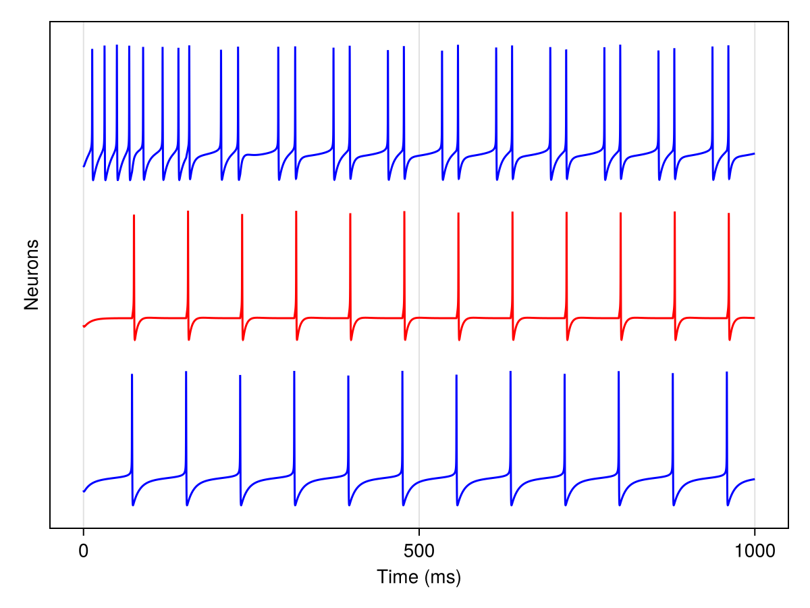
Suggestion : Try different values of input currents 'I_bg' and connection weights. One can try different permutations of excitatory and inhibitory neurons.
Creating a lateral inhibition circuit (the "winner-takes-all" circuit) in superficial cortical layer

global_namespace=:g
N_exci = 5; ##number of excitatory neurons
n_inh = HHNeuronInhib(name = Symbol("inh"), namespace=global_namespace, G_syn = 4.0, τ = 70) ##feedback inhibitory interneuron neuron
##creating an array of excitatory pyramidal neurons
n_excis = [HHNeuronExci(
name = Symbol("exci$i"),
namespace=global_namespace,
G_syn = 3.0,
τ = 5,
I_bg = 5*rand(),
) for i = 1:N_exci]
g = GraphSystem()
for i in 1:N_exci
add_connection!(g, n_inh, n_excis[i], DefaultRule(weight = 1.0))
add_connection!(g, n_excis[i], n_inh, DefaultRule(weight = 1.0))
end
prob = ODEProblem(g, [], (0.0, 1000), [])
sol = solve(prob, Vern7(), saveat=0.1)
stackplot(vcat(n_excis, n_inh), sol)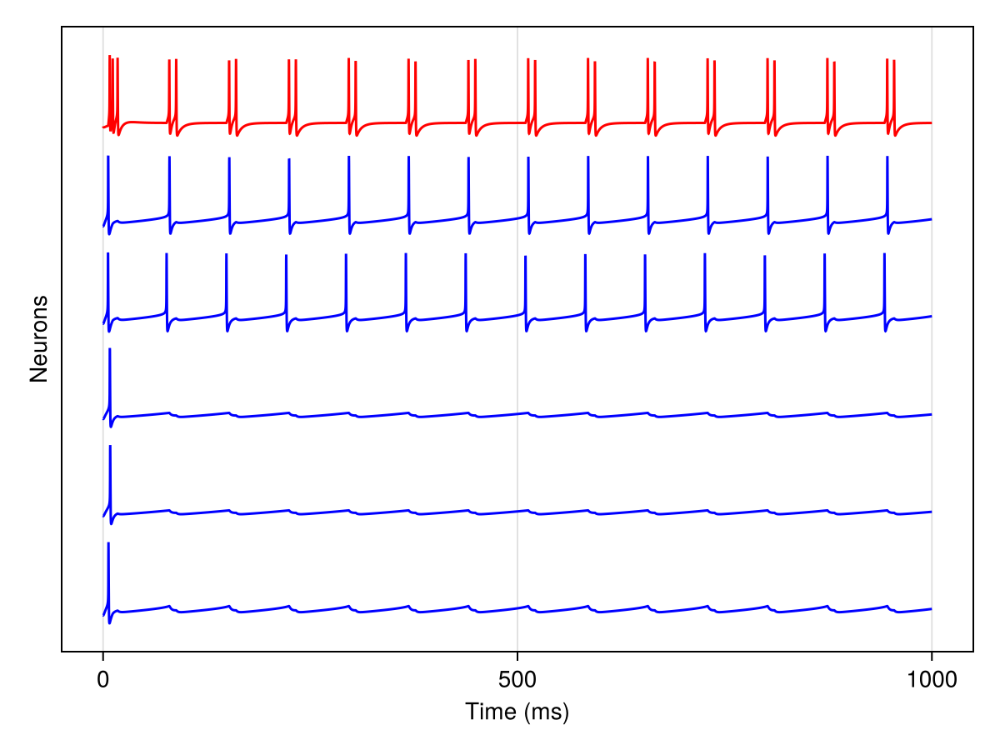
Suggestion : Instead of uniform random input current in each excitatory neuron, try different configurations (random or constant) of input currents I_bg for each neuron. One can vary the size of circuit by changing number of excitatory neurons.
Creating lateral inhibition "winner-take-all" circuit (WTA) blocks from the inbuilt functions and connecting two WTA circuit blocks
global_namespace=:g
N_exci = 5 ##number of excitatory neurons in each WTA circuit
wta1 = WinnerTakeAll(name=Symbol("wta1"), I_bg=5.0, N_exci=N_exci, namespace=global_namespace) ##for a single valued input current, each neuron of the WTA circuit will recieve a uniformly distributed random input from 0 to I_bg
wta2 = WinnerTakeAll(name=Symbol("wta2"), I_bg=4.0, N_exci=N_exci, namespace=global_namespace)
g = GraphSystem()
add_connection!(g, wta1, wta2, DensityRule(density = 0.5, weight = 1)) ##density keyword sets the connection probability from each excitatory neuron of source WTA circuit to each excitatory neuron of target WTA circuit
prob = ODEProblem(g, [], (0.0, 1000), [])
sol = solve(prob, Vern7(), saveat=0.1)retcode: Success
Interpolation: 1st order linear
t: 10001-element Vector{Float64}:
0.0
0.1
0.2
0.3
0.4
0.5
0.6
0.7
0.8
0.9
⋮
999.2
999.3
999.4
999.5
999.6
999.7
999.8
999.9
1000.0
u: 10001-element Vector{Vector{Float64}}:
[-65.0, 0.32, 0.05, 0.59, -65.0, 0.32, 0.05, 0.59, -65.0, 0.32 … 0.0, 0.0, 0.0, 0.0, 0.0, 0.0, 0.0, 0.0, 0.0, 0.0]
[-65.40062505967632, 0.30249027605247164, 0.023037829586596465, 0.6147295358164631, -65.40062505967632, 0.30249027605247164, 0.023037829586596465, 0.6147295358164631, -64.90435991431565, 0.29989978341405504 … 5.319292940579676e-17, 9.20315661493197e-16, 5.319292940579676e-17, 9.20315661493197e-16, 5.319292940579676e-17, 9.20315661493197e-16, 5.319292940579676e-17, 9.20315661493197e-16, 5.319292940579676e-17, 9.20315661493197e-16]
[-65.70800408589743, 0.2861849062071466, 0.020905322035187673, 0.6382023594911369, -65.70800408589743, 0.2861849062071466, 0.020905322035187676, 0.6382023594911369, -64.71442717399358, 0.2815956424442123 … 1.6359080082134816e-16, 1.2810101707921594e-15, 1.6359080082134816e-16, 1.2810101707921594e-15, 1.6359080082134816e-16, 1.2810101707921594e-15, 1.6359080082134816e-16, 1.2810101707921594e-15, 1.6359080082134816e-16, 1.2810101707921594e-15]
[-65.93759487841429, 0.2710514932628762, 0.020190760645246008, 0.6603300265468034, -65.93759487841429, 0.2710514932628762, 0.020190760645246008, 0.6603300265468034, -64.4502150324119, 0.26498847187057584 … 2.973454667645526e-16, 1.4736391334018271e-15, 2.973454667645526e-16, 1.4736391334018271e-15, 2.973454667645526e-16, 1.4736391334018271e-15, 2.973454667645526e-16, 1.4736391334018271e-15, 2.973454667645526e-16, 1.4736391334018271e-15]
[-66.10708565457523, 0.25704415015084836, 0.019712952505262064, 0.6810770249991123, -66.10708565457523, 0.25704415015084836, 0.019712952505262275, 0.6810770249991123, -64.1310927947538, 0.24997349815632236 … 4.455015870377385e-16, 1.638787597499503e-15, 4.455015870377385e-16, 1.6387875974995018e-15, 4.455015870377385e-16, 1.6387875974995018e-15, 4.455015870377385e-16, 1.638787597499503e-15, 4.455015870377385e-16, 1.6387875974995018e-15]
[-66.23000679997482, 0.24410800224368442, 0.019373429746418976, 0.7004474238102706, -66.23000679997482, 0.24410800224368442, 0.01937342974641888, 0.7004474238102706, -63.77132761084799, 0.23644479444450034 … 6.080216596310351e-16, 1.828067464888159e-15, 6.080216596310348e-16, 1.828067464888154e-15, 6.080216596310348e-16, 1.8280674648881543e-15, 6.080216596310351e-16, 1.828067464888159e-15, 6.080216596310348e-16, 1.8280674648881543e-15]
[-66.31665951981034, 0.2321832845698547, 0.01913514979662334, 0.7184724009959302, -66.31665951981036, 0.2321832845698547, 0.0191351497966236, 0.7184724009959302, -63.38147297196996, 0.2242985836573841 … 7.881983834931585e-16, 2.062728655390954e-15, 7.881983834931569e-16, 2.0627286553909355e-15, 7.881983834931572e-16, 2.0627286553909415e-15, 7.881983834931585e-16, 2.062728655390954e-15, 7.881983834931572e-16, 2.0627286553909415e-15]
[-66.37492468728183, 0.2212081902422417, 0.018973864231342858, 0.7352009944100092, -66.37492468728186, 0.22120819024224167, 0.018973864231343198, 0.7352009944100092, -62.969385909323066, 0.21343523373476495 … 9.908000155683621e-16, 2.354641310902083e-15, 9.908000155683578e-16, 2.354641310902045e-15, 9.908000155683584e-16, 2.3546413109020503e-15, 9.908000155683621e-16, 2.354641310902083e-15, 9.908000155683584e-16, 2.3546413109020503e-15]
[-66.4108630986734, 0.21112081556150017, 0.018871903986221565, 0.7506933837600289, -66.41086309867343, 0.21112081556150014, 0.018871903986228795, 0.7506933837600289, -62.54094724149076, 0.20376039010437055 … 1.2215469819087454e-15, 2.7137854740761684e-15, 1.2215469819087366e-15, 2.7137854740761034e-15, 1.221546981908738e-15, 2.7137854740761183e-15, 1.2215469819087454e-15, 2.7137854740761684e-15, 1.221546981908738e-15, 2.7137854740761183e-15]
[-66.42915996052987, 0.20186046811963615, 0.018815334028108446, 0.7650160734532462, -66.4291599605299, 0.2018604681196361, 0.018815334028091858, 0.7650160734532462, -62.10057602088447, 0.19518554529446722 … 1.4870625858895127e-15, 3.1509699982996663e-15, 1.4870625858894966e-15, 3.1509699982995587e-15, 1.4870625858894997e-15, 3.1509699982995693e-15, 1.4870625858895127e-15, 3.1509699982996663e-15, 1.4870625858894997e-15, 3.1509699982995693e-15]
⋮
[-67.44419198075668, 0.08490649137926409, 0.016432429585803886, 0.9532966506566205, -66.56290359833979, 0.09144617277853523, 0.018355776874877983, 0.9471462691826775, -58.58131142110093, 0.13275182164012203 … 0.0031703954336012165, 1.1054845743639318e-14, 0.003775169837165629, 8.451038379406932e-15, 0.0033438144511404064, 9.691049272711936e-15, 0.0031703954336012165, 1.1054845743639318e-14, 0.0033438144511404064, 9.691049272711936e-15]
[-67.29951200123185, 0.08563766925785743, 0.016747713296453748, 0.9524654012378188, -66.38708015577824, 0.09217766021073867, 0.018780854503137264, 0.9462288582802594, -58.572262211186306, 0.13277623218509615 … 0.0031076173978748377, 1.097668413962774e-14, 0.0037004164658983123, 8.430769060419657e-15, 0.003277602488792781, 9.644034378843639e-15, 0.0031076173978748377, 1.097668413962774e-14, 0.003277602488792781, 9.644034378843639e-15]
[-67.15775681813663, 0.08639312857155476, 0.01704987267567882, 0.951612646716809, -66.2153492393323, 0.09295751008102657, 0.019192575451513646, 0.9452661577291647, -58.562954442861354, 0.13280574505682724 … 0.003046082450543005, 1.0902169257431332e-14, 0.003627143310556849, 8.41221374781683e-15, 0.003212701611142572, 9.599607471918807e-15, 0.003046082450543005, 1.0902169257431332e-14, 0.003212701611142572, 9.599607471918807e-15]
[-67.01886402415643, 0.08716981294351922, 0.017351562560939247, 0.9507404241642967, -66.04761312089443, 0.09378017989223658, 0.019603980612673752, 0.9442622828804484, -58.55340199614104, 0.13284013596806124 … 0.0029857659768063073, 1.0831120348099863e-14, 0.0035553210609021134, 8.395292225921521e-15, 0.0031490858569733597, 9.557643526594116e-15, 0.0029857659768063073, 1.0831120348099863e-14, 0.0031490858569733597, 9.557643526594116e-15]
[-66.88277349931828, 0.08796492607456746, 0.017668176655444796, 0.9498506055397913, -65.88377572398888, 0.09464059508942896, 0.02002146969307609, 0.9432210071594875, -58.54361796617961, 0.13287918903623167 … 0.0029266438492710272, 1.0763369307575364e-14, 0.0034849209870766087, 8.379929635477946e-15, 0.003086729779135263, 9.51802604339795e-15, 0.0029266438492710272, 1.0763369307575364e-14, 0.003086729779135263, 9.51802604339795e-15]
[-66.74941763266744, 0.0887759077592021, 0.017960920778094462, 0.9489449164857785, -65.72373877942792, 0.09553410854689545, 0.020429567215898118, 0.9421457990586437, -58.53361470656143, 0.1329226966665094 … 0.002868692418297868, 1.0698759604506097e-14, 0.003415914928112152, 8.366056064173426e-15, 0.003025608434365747, 9.480646362107806e-15, 0.002868692418297868, 1.0698759604506097e-14, 0.003025608434365747, 9.480646362107806e-15]
[-66.6187424339799, 0.08960041800071893, 0.01826315260873175, 0.9480249467786005, -65.56741232146052, 0.09645646682263559, 0.020838692726882678, 0.9410398512837519, -58.52340387021349, 0.1329704594118794 … 0.002811888502541854, 1.06371453332314e-14, 0.0033482752806651946, 8.353606175513975e-15, 0.0029656973733120555, 9.445403048044121e-15, 0.002811888502541854, 1.06371453332314e-14, 0.0029656973733120555, 9.445403048044121e-15]
[-66.49068954331884, 0.09043631519853189, 0.0185730363628222, 0.9470921670735545, -65.41470623693729, 0.09740377541983568, 0.021247159992636547, 0.9399061105730875, -58.51299644850794, 0.13302228581412595 … 0.002756209379679083, 1.0578390368575521e-14, 0.0032819749879746405, 8.342518869866256e-15, 0.002906972630750727, 9.41220133812067e-15, 0.002756209379679083, 1.0578390368575521e-14, 0.002906972630750727, 9.41220133812067e-15]
[-66.36519771692328, 0.09128163960738357, 0.01886590756366122, 0.9461479403625872, -65.26553241137424, 0.0983724692355612, 0.02165171225303538, 0.9387473017604576, -58.5024028082097, 0.13307799222889535 … 0.0027016327773180977, 1.0522367580529154e-14, 0.0032169875290395003, 8.33273697143647e-15, 0.002849410716001822, 9.380952627091863e-15, 0.0027016327773180977, 1.0522367580529154e-14, 0.002849410716001822, 9.380952627091863e-15]get_neurons traverses a composite blox (or an array of blox) and returns a flat vector of all the individual neuron blox it contains. This is useful when you want to pass individual neurons to stackplot or other functions that operate on single-neuron blox rather than composite blocks.
neuron_set = get_neurons([wta1, wta2]) ## extract neurons from a composite blocks
stackplot(neuron_set,sol)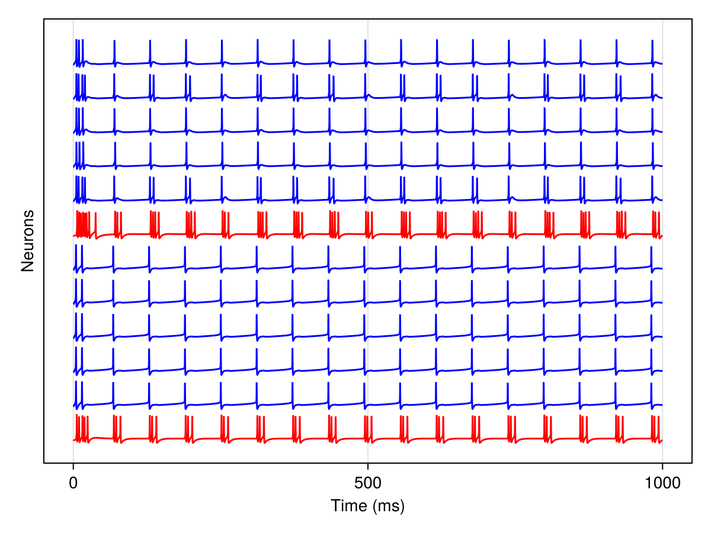
Creating a single cortical superficial layer block by connecting multiple WTA circuits
This model is SCORT in [1] and looks like this 
global_namespace=:g
N_wta=10 ## number of WTA circuits
# parameters
N_exci=5 ##number of pyramidal neurons in each lateral inhibition (WTA) circuit
G_syn_exci=3.0 ##maximal synaptic conductance in glutamatergic (excitatory) synapses
G_syn_inhib=4.0 ## maximal synaptic conductance in GABAergic (inhibitory) synapses from feedback interneurons
G_syn_ff_inhib=3.5 ## maximal synaptic conductance in GABAergic (inhibitory) synapses from feedforward interneurons
I_bg=5.0 ##background input
density=0.01 ##connection density between WTA circuits
##creating array of WTA ciruits
wtas = [WinnerTakeAll(;
name=Symbol("wta$i"),
namespace=global_namespace,
N_exci=N_exci,
G_syn_exci=G_syn_exci,
G_syn_inhib=G_syn_inhib,
I_bg = I_bg
) for i = 1:N_wta]
##feed-forward interneurons (get input from other pyramidal cells and from the ascending system, largely controls the rhythm)
n_ff_inh = HHNeuronInhib(;
name=Symbol("ff_inh"),
namespace=global_namespace,
G_syn=G_syn_ff_inhib
)
g = GraphSystem()
# connecting WTA circuits to each other with given connection density, and feedforward interneuron connects to each WTA circuit
for i in 1:N_wta
for j in 1:N_wta
if j != i
add_connection!(g, wtas[i], wtas[j], DensityRule(density = density, weight = 1))
end
end
add_connection!(g, n_ff_inh, wtas[i], DefaultRule(weight = 1))
end
prob = ODEProblem(g, [], (0.0, 1000), [])
sol = solve(prob, Vern7(), saveat=0.1)
neuron_set = get_neurons(vcat(wtas, n_ff_inh)) ## extract neurons from a composite blocks
stackplot(neuron_set, sol)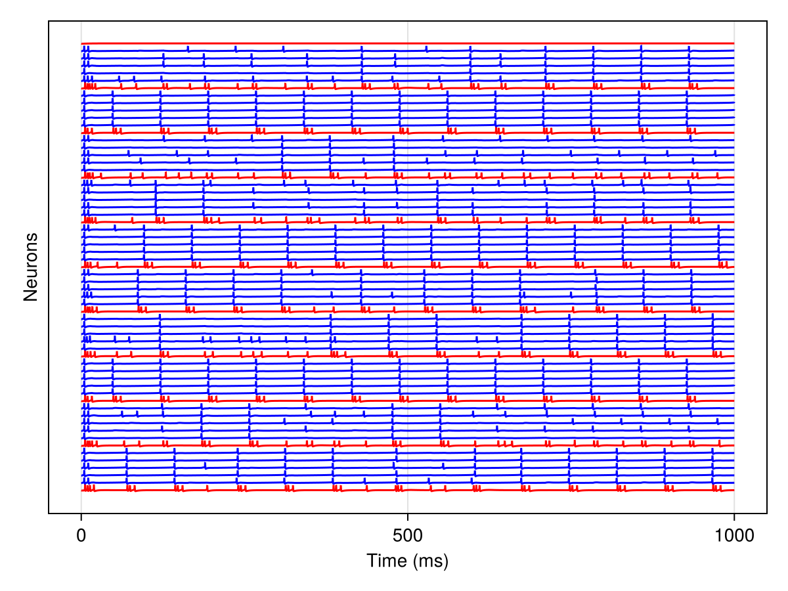
Sugestion : try different connection densities and weights and see how it affects the population activity.
Connecting the cortical superficial layer block to an ascending system block
Now we will expand on the SCORT block of the previous section by defining a block representing an ascending neuromodulatory system (ASC1 in [1]) and then connecting the two blocks together. "Ascending system" here refers to brainstem and subcortical neuromodulatory inputs (such as those from the locus coeruleus, basal forebrain, or thalamic relay nuclei) that broadcast rhythmic modulation to cortex — not feedforward sensory inputs from lower areas. The NextGenerationEI blox is a next-generation neural mass model (Byrne et al. 2020) that captures the dynamics of a coupled excitatory-inhibitory population and is used here to generate a 16 Hz modulating drive to the cortical block.
global_namespace=:g
# define ascending system block using a Next Generation Neural Mass model as described in Byrne et. al. 2020.
# the parameters are fixed to generate a 16 Hz modulating frequency in the cortical neurons
@named ASC1 = NextGenerationEI(;namespace=global_namespace, Cₑ=2*26,Cᵢ=1*26, Δₑ=0.5, Δᵢ=0.5, η_0ₑ=10.0, η_0ᵢ=0.0, v_synₑₑ=10.0, v_synₑᵢ=-10.0, v_synᵢₑ=10.0, v_synᵢᵢ=-10.0, alpha_invₑₑ=10.0/26, alpha_invₑᵢ=0.8/26, alpha_invᵢₑ=10.0/26, alpha_invᵢᵢ=0.8/26, kₑₑ=0.0*26, kₑᵢ=0.6*26, kᵢₑ=0.6*26, kᵢᵢ=0*26)
# define the superficial layer cortical block using inbuilt function
# Number if WTA circuits = N_wta=45; number of pyramidal neurons in each WTA circuit = N_exci = 5;
@named CB = Cortical(N_wta=10, N_exci=5, density=0.01, weight=1, I_bg_ar=7; namespace=global_namespace)
# define graph and connect ASC1->CB
g = GraphSystem()
add_connection!(g, ASC1, CB, DefaultRule(weight = 44))
# solve the system for time 0 to 1000 ms
prob = ODEProblem(g, [], (0.0, 1000), []) ## tspan = (0,1000)
sol = solve(prob, Vern7(), saveat=0.1);plot neuron time series
neuron_set = get_neurons(CB) ## extract neurons from a composite block like Cortical
n_neurons = 50 ## set number nof neurons to display in the stackplot
stackplot(neuron_set[1:n_neurons], sol)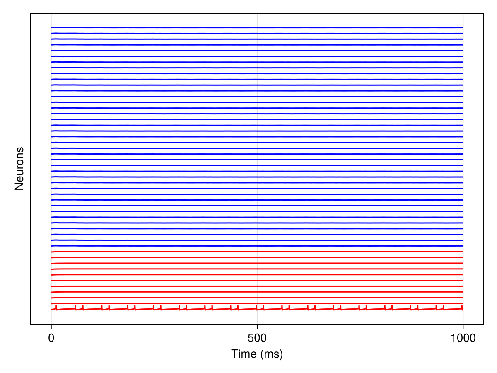
plot the meanfield of all cortical block neurons (mean membrane voltage)
mnv = meanfield_timeseries(CB, sol)
fig = Figure();
ax = Axis(fig[1,1]; xlabel = "time (ms)", ylabel = "Meanfield voltage (mv)")
lines!(ax, sol.t, mnv)
fig ## to display the figure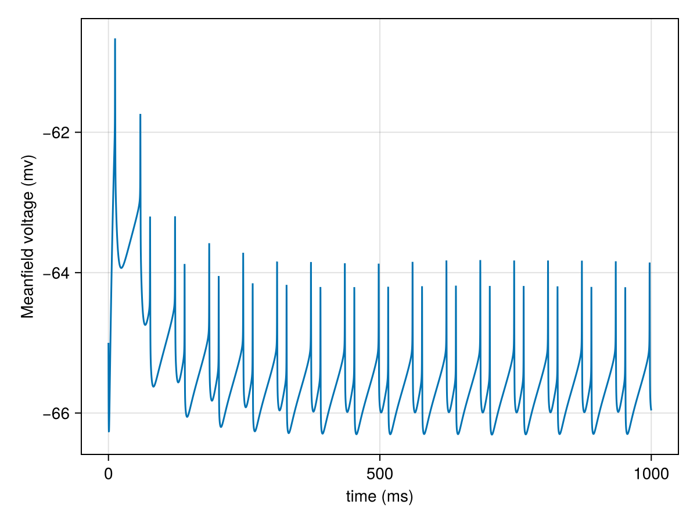
plot power spectrum of the meanfield (average over membrane potentials)
powerspectrumplot(CB, sol)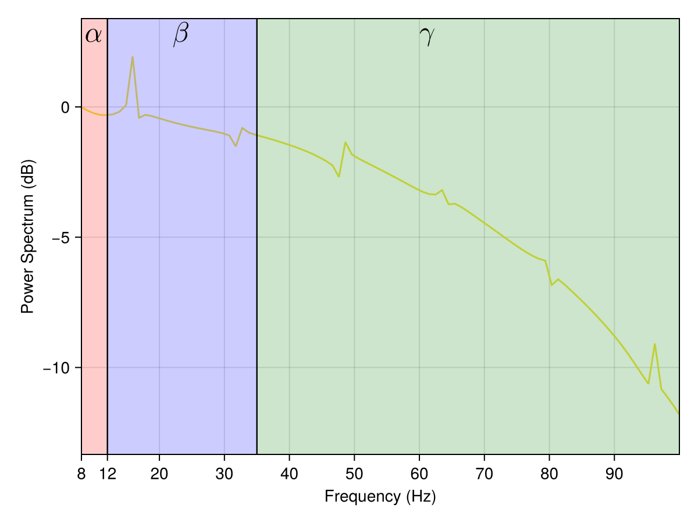
Notice the peak at 16 Hz, representing beta oscillations. Sugestion : try changing parameters of ASC1 to generate different cortical rhythms. See how the peak shifts in the powerspectrum
Creating simulation of visual stimulus response in cortical blocks
 create cortical blocks for visual area cortex (VAC), anterior cortex (AC) and ascending system block (ASC1)
create cortical blocks for visual area cortex (VAC), anterior cortex (AC) and ascending system block (ASC1)
global_namespace=:g
# cortical blox
@named VAC = Cortical(N_wta=10, N_exci=5, density=0.01, weight=1,I_bg_ar=0; namespace=global_namespace)
@named AC = Cortical(N_wta=10, N_exci=5, density=0.01, weight=1,I_bg_ar=0; namespace=global_namespace)
# ascending system blox, modulating frequency set to 16 Hz
@named ASC1 = NextGenerationEI(;namespace=global_namespace, Cₑ=2*26,Cᵢ=1*26, Δₑ=0.5, Δᵢ=0.5, η_0ₑ=10.0, η_0ᵢ=0.0, v_synₑₑ=10.0, v_synₑᵢ=-10.0, v_synᵢₑ=10.0, v_synᵢᵢ=-10.0, alpha_invₑₑ=10.0/26, alpha_invₑᵢ=0.8/26, alpha_invᵢₑ=10.0/26, alpha_invᵢᵢ=0.8/26, kₑₑ=0.0*26, kₑᵢ=0.6*26, kᵢₑ=0.6*26, kᵢᵢ=0*26)NGNMM_theta(:ASC1, :g, @NamedTuple{Cₑ, Cᵢ, Δₑ, Δᵢ, η_0ₑ, η_0ᵢ, v_synₑₑ, v_synₑᵢ, v_synᵢₑ, v_synᵢᵢ, alpha_invₑₑ, alpha_invₑᵢ, alpha_invᵢₑ, alpha_invᵢᵢ, kₑₑ, kₑᵢ, kᵢₑ, kᵢᵢ}((52.0, 26.0, 0.5, 0.5, 10.0, 0.0, 10.0, -10.0, 10.0, -10.0, 0.38461538461538464, 0.03076923076923077, 0.38461538461538464, 0.03076923076923077, 0.0, 15.6, 15.6, 0.0)), Dict{Symbol, Any}())create an image source block which takes image data from a .csv file and gives input to visual cortex
image_set = CSV.read(Downloads.download("raw.githubusercontent.com/Neuroblox/NeurobloxDocsHost/refs/heads/main/data/image_example.csv"), StructArray) ## reading data into CSV file format
image_sample = 2 ## set which image to input (from 1 to 1000)
# define stimulus source blox
# t_stimulus: how long the stimulus is on (in msec)
# t_pause : how long th estimulus is off (in msec)
@named stim = ImageStimulus(image_set[[image_sample]]; namespace=global_namespace, t_stimulus=1000, t_pause=0);plot the image that the visual cortex 'sees'
pixels = collect(image_set[image_sample])[1:end-1] ## access the desired image sample from respective row
pixels = reshape(pixels, 15, 15)## reshape into 15 X 15 square image matrix
heatmap(pixels,colormap = :gray1) #input image matrix seen as heatmap
assemble the blox into a graph and set connections with their keword arguments like connection weight and connection density
g = GraphSystem()
add_connection!(g, stim, VAC, DefaultRule(weight = 14))
add_connection!(g, ASC1, VAC, DefaultRule(weight = 44))
add_connection!(g, ASC1, AC, DefaultRule(weight = 44))
add_connection!(g, VAC, AC, HypergeometricRule(density = 0.08, weight = 3))
# define system and solve
prob = ODEProblem(g, [], (0.0, 1000), []) ## tspan = (0,1000)
sol = solve(prob, Vern7(), saveat=0.1);Let us now plot neuron potentials, meanfield activity and powerspectrums for the VAC and AC blox. First we show the stackplot of voltage potentials from the first 10 neurons of VAC
VAC_neuron_set = get_neurons(VAC) ## extract neurons from VAC
n_neurons = 40 ##number of neurons displayed. You can try incresing it.
stackplot(VAC_neuron_set[1:n_neurons],sol)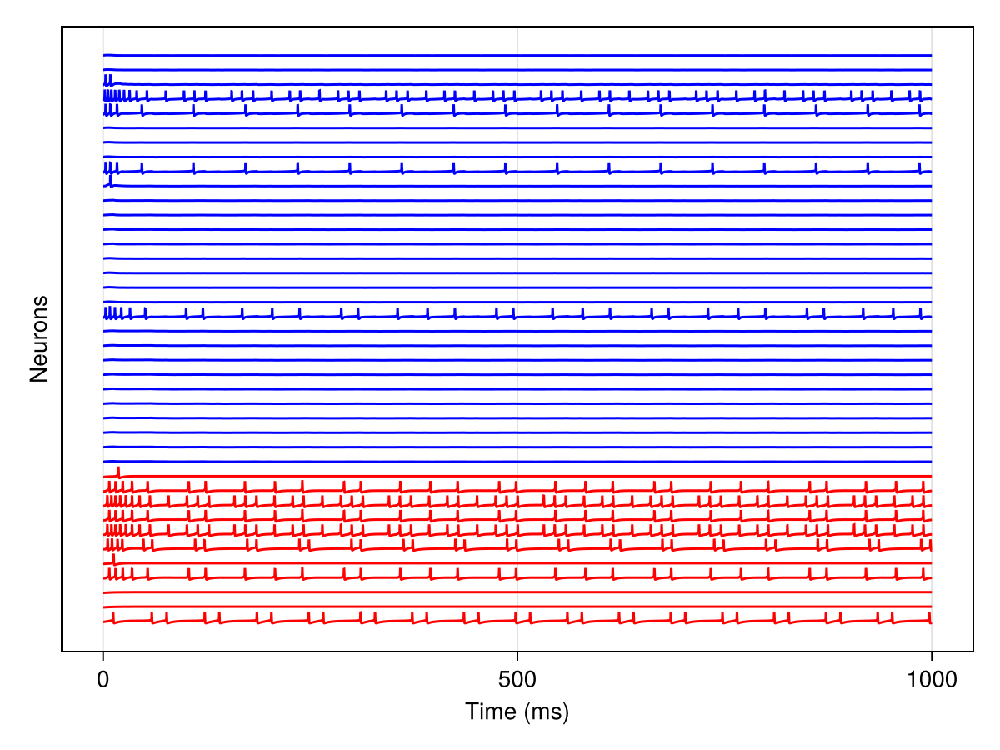
then we plot the meanfield potential out of all neurons within VAC
mnv = meanfield_timeseries(VAC, sol)
fig = Figure();
ax = Axis(fig[1,1]; xlabel = "time (ms)", ylabel = "Voltage (mv)")
lines!(ax, sol.t, mnv)
fig ## to display the figure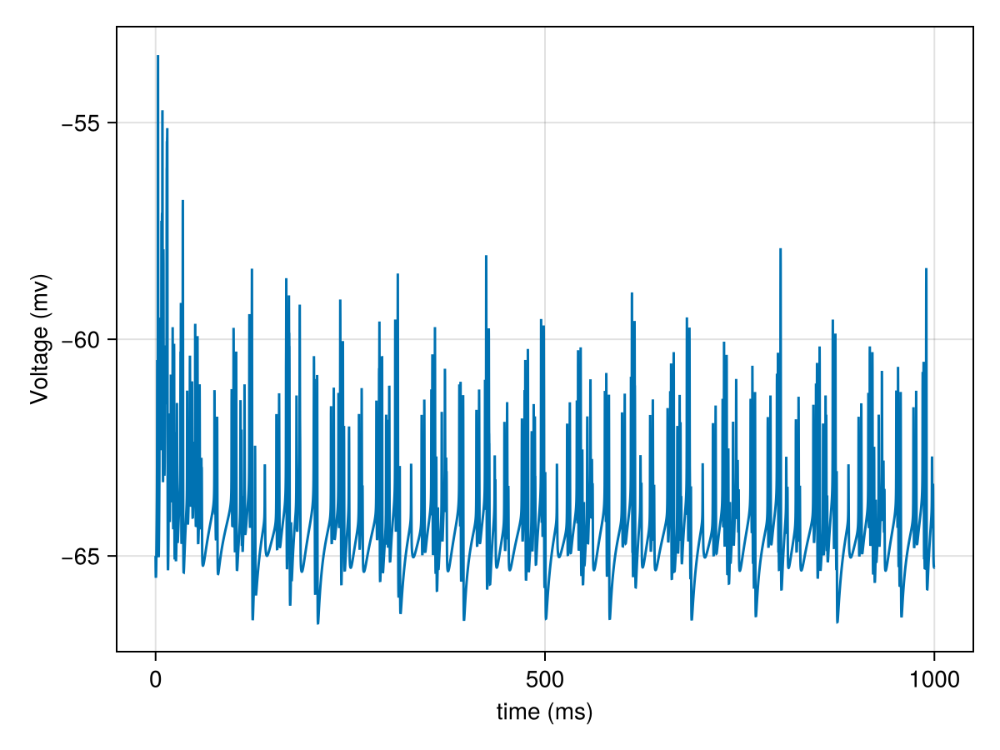
Here is the powerspectrum from all neurons within VAC
powerspectrumplot(VAC, sol)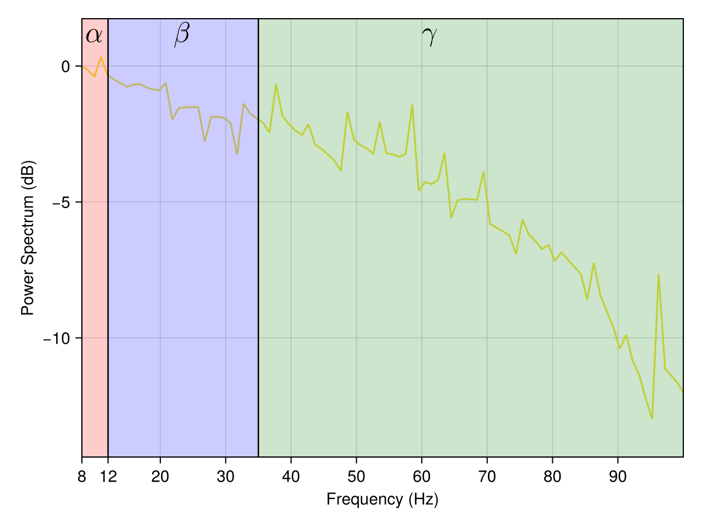
Moving on to the AC blox, we first plot the voltage potential of its neurons
AC_neuron_set = get_neurons(AC) ## extract neurons from VAC
n_neurons = 40
stackplot(AC_neuron_set[1:n_neurons], sol)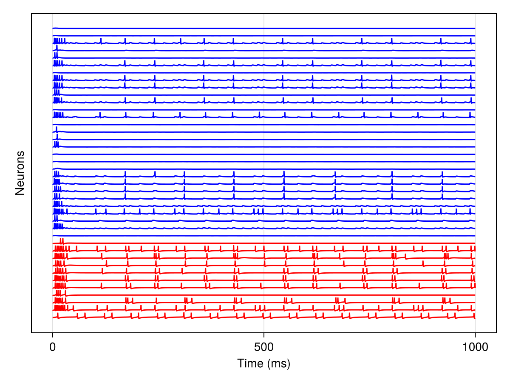
followed by the meanfield activity
mnv = meanfield_timeseries(AC, sol)
fig = Figure();
ax = Axis(fig[1,1]; xlabel = "time (ms)", ylabel = "Voltage (mv)")
lines!(ax, sol.t, mnv)
fig ## to display the figure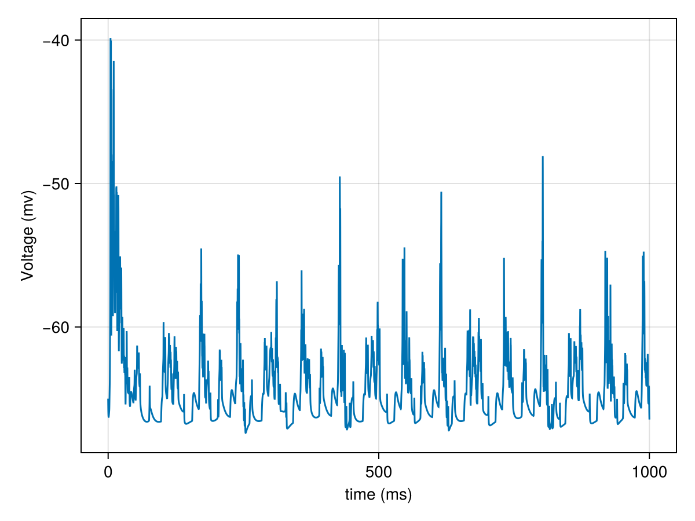
and finally the AC powerspectrum
powerspectrumplot(AC, sol)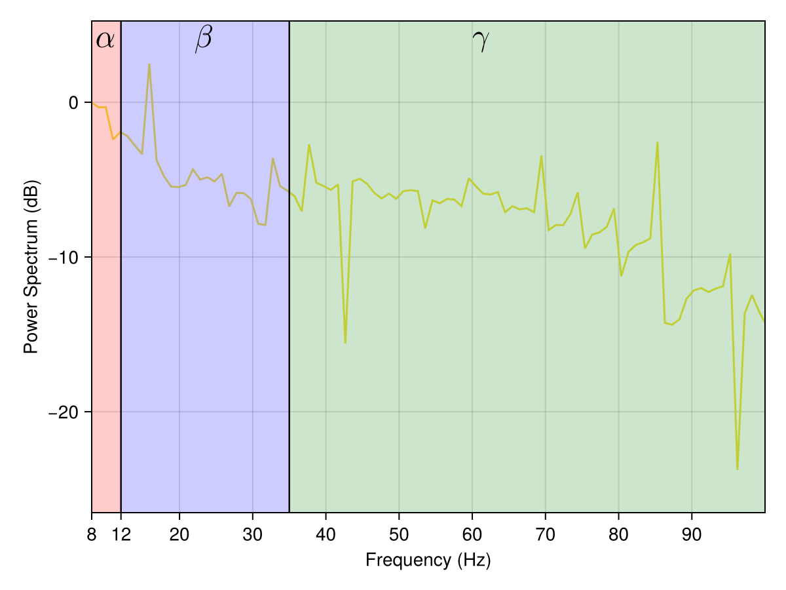
Sugestion : Try changing the image samples and notice the change in the spatial firing patterns in VAC and AC neurons. One can make multiple cortical blocks simillar to AC and connect them in various connection topologies. All of them can directly or indirectly get input from VAC.
References
[1] Pathak, A., Brincat, S.L., Organtzidis, H. et al. Biomimetic model of corticostriatal micro-assemblies discovers a neural code. Nat Commun (2025). https://doi.org/10.1038/s41467-025-67076-x
This page was generated using Literate.jl.